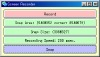
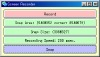

撮影領域などを設定した後、 「Record」ボタンを押すと、撮影を開始します。
 〜撮影中〜
「Stop」ボタンを押すと、撮影を終了します。
ムービーファイルを入力するダイアログが開きますので、ディレクトリ等を選択してファイル名を入力します。
進行状況を示すダイアログが現れますので、終了するまで待ちます。
QuickTime ムービーが作成され、「じゅん」のムービープレーヤが開きます。

{kind=link}
{kind=link}
{kind=link}
{kind=link}
{kind=link}
{kind=link}
{kind=link}
{kind=link}
{kind=link}
JunScreenRecorderSample.mov ：保存されたムービー
2006年08月22日 文責：浅岡 浩子
このページでは、「じゅん」の機能を利用して画面上に表示されている物のムービーを録画する方法を解説します。
録画されるムービーには、マウスの動きを撮ることができます。
ただし、現在、Mac OS X では 映像や音声を扱う場合に必要な
'JunMacOSXInterface.dylib'（dynamic link library for QuickTime on Mac OS
X）
がベータ版なので、正常に動作しません。
対応するまで、Windows で画面録画を利用してください。
ケモじゅんランチャーの「Misc」 -> 「Jun Launcher」メニューを選択します。
「Jun Launcher」のウィンドウが開きます。
じゅんランチャー の Tools」 -> 「Screen Recorder」メニューを選択します。
「Screen Recorder」のウィンドウが開きます。
以下の項目を適当なものに設定します。
それぞれの項目の推奨設定は、「◎」のついている項目です。
| 「Snap Area」撮影領域 | 保存する画像・ムービーの範囲を指定します | |
|---|---|---|
| 「From expression...」 | ピクセル単位で座標を指定します | |
| ◎ | 「From user...」 | ドラッグして範囲を指定します |
| 「Whole screen」 | スクリーン全てを範囲に指定します | |
| 「Snap Size」撮影サイズ | 保存する画像・ムービーのサイズを指定します | |
| 「320@240 (half)」 | ４：３のハーフサイズ | |
| 「160@120 (quart)」 | ４：３のクォートサイズ | |
| 「640@480 (full)」 | ４：３のフルサイズ | |
| ◎ | 「area (as is)」 | ピクセル等倍 |
| 「area / 2」 | 半分の大きさ | |
| 「area / 4」 | １／４の大きさ | |
| 「area / 8」 | １／８の大きさ | |
| 「Recording Speed」録画速度 | ムービーを録画する速さを指定します | |
| 「100 msec. (10 frames per sec.)」 | １秒間に１０フレーム（細かく撮る） | |
| ◎ | 「200 msec. (5 frames per sec.)」 | １秒間に５フレーム |
| 〜 | ||
| 「1 min. (1 frames per min.)」 | １分間に１フレーム（大まかに撮る） | |
撮影領域などを設定した後、 「Record」ボタンを押すと、撮影を開始します。
 〜撮影中〜
「Stop」ボタンを押すと、撮影を終了します。
ムービーファイルを入力するダイアログが開きますので、ディレクトリ等を選択してファイル名を入力します。
進行状況を示すダイアログが現れますので、終了するまで待ちます。
QuickTime ムービーが作成され、「じゅん」のムービープレーヤが開きます。
JunScreenRecorderSample.mov ：保存されたムービー